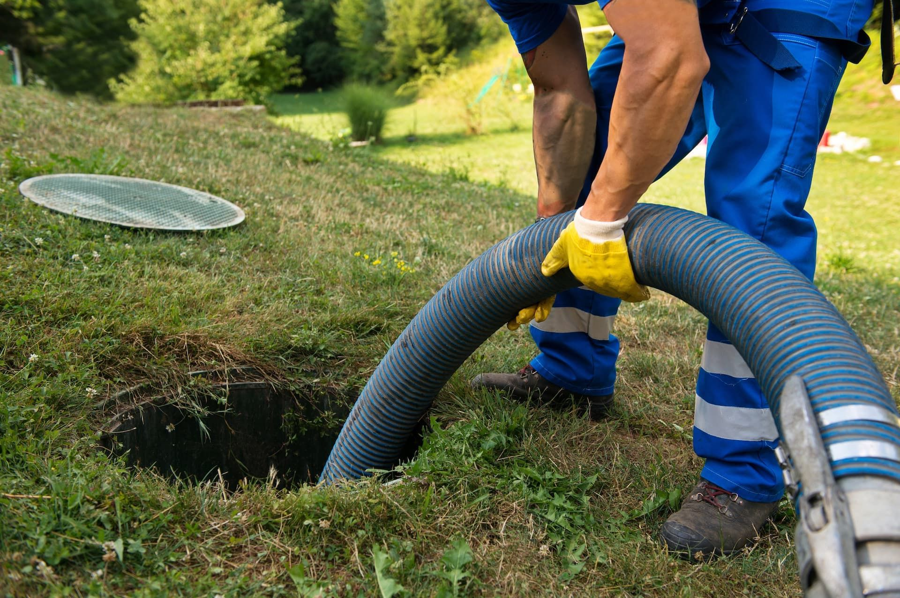
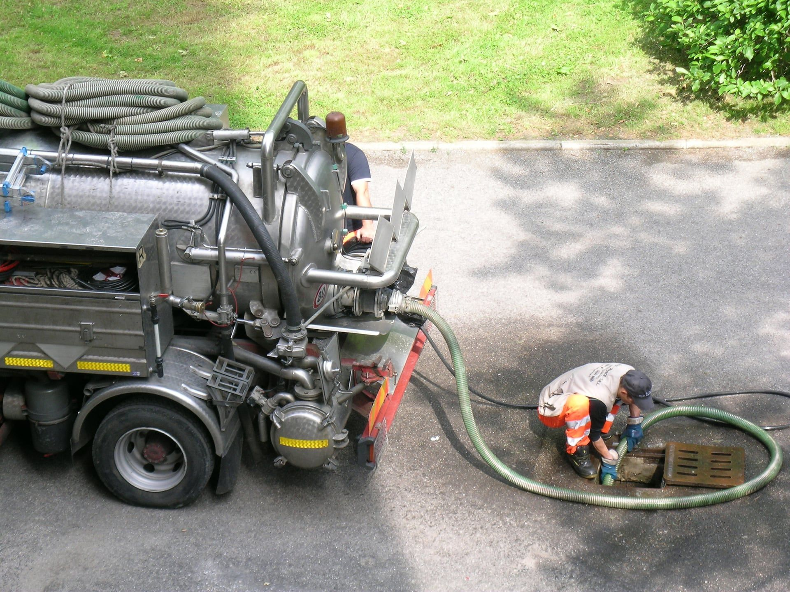
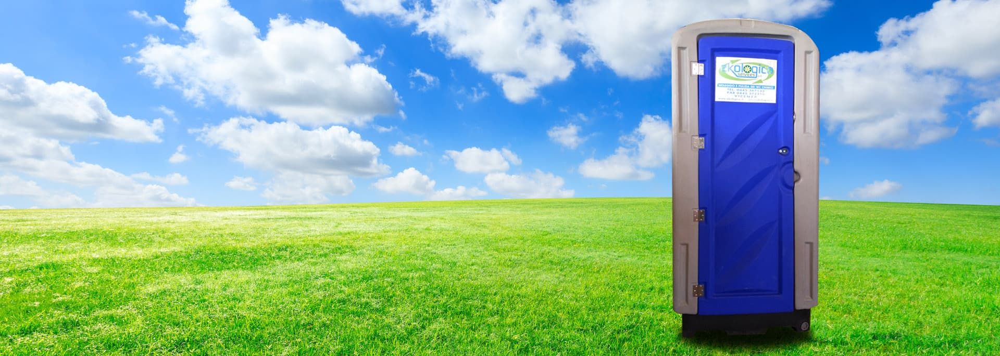
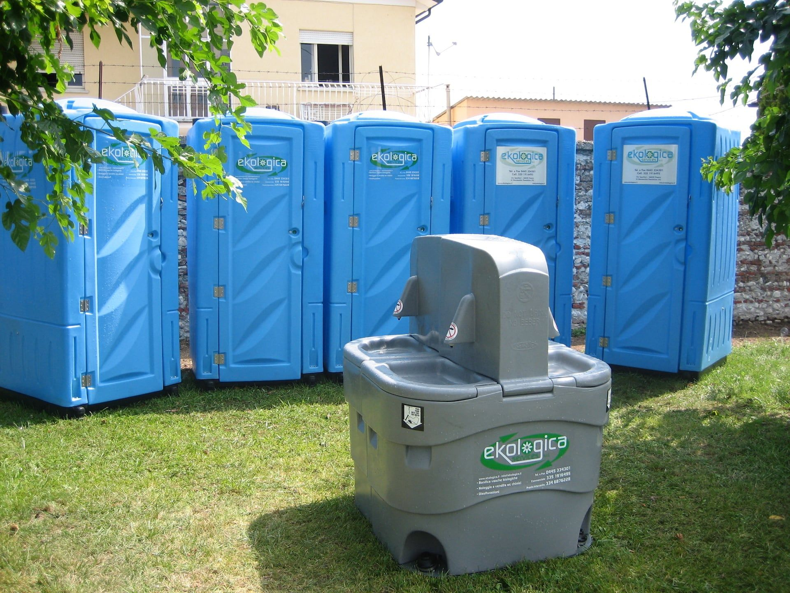
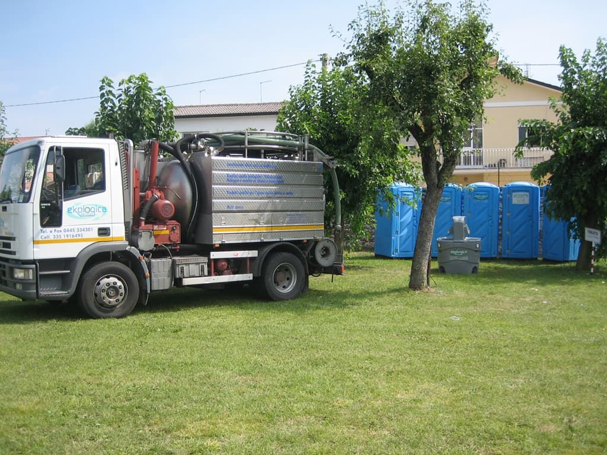
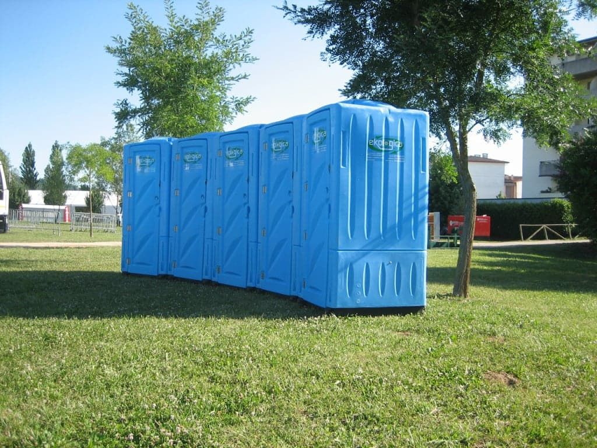
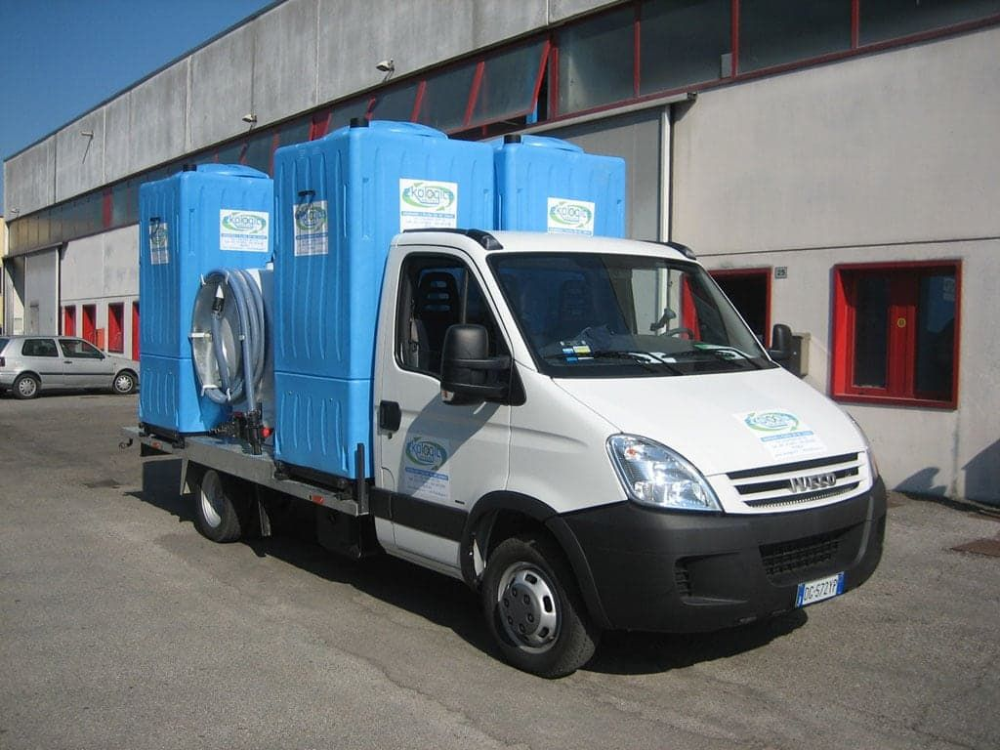
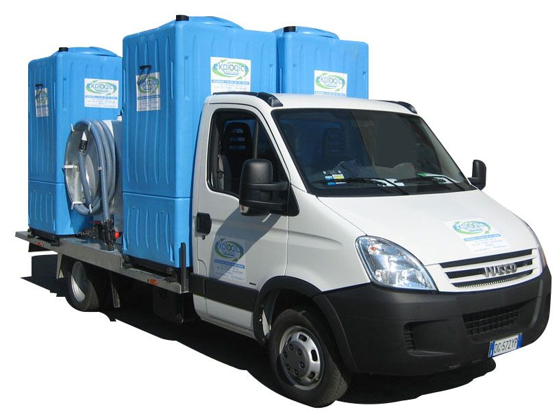

01 / 06
Pulizia e disotturazione tubi
Pulizie e sanificazioni di ambienti e impianti, con prodotti e procedure certificati.
Anteprima riservata
Il nuovo sito di Ekologica Services
umbra® studio web

Vicenza Pulizia e disotturazione tubi
Ekologica Services in numeri
Mezzi propri, personale formato, documenti in ordine. Dalla chiamata al formulario.

Pulizie e sanificazioni di ambienti e impianti, con prodotti e procedure certificati.

Svuotamento e pulizia di fosse biologiche, Imhoff e degrassatori.

Svuotamento e pulizia di fosse biologiche, Imhoff e degrassatori.

Ispezione delle condotte con telecamera: si vede il problema prima di scavare.

Ritiro e trasporto di rifiuti speciali da aziende e cantieri, con formulario e impianto di destinazione autorizzato.

Noleggio e manutenzione di bagni chimici per cantieri ed eventi.
Procedura
Ci dite dove e cosa: fossa, pozzetto, condotta, urgenza.
Valutiamo accesso, volumi e mezzo adatto.
Aspirazione, lavaggio e, se serve, video-ispezione.
Il refluo va a un impianto autorizzato, con formulario.
Vi restano i documenti di trasporto e smaltimento.
Trascinate per scorrere.

Lavora con noi
Mandateci il vostro curriculum: lo leggiamo tutto, e vi richiamiamo.
Contatti
Enti, aziende e privati: indicateci il servizio e la zona, vi rispondiamo con tempi e preventivo.
Anteprima riservata · preparata per Ekologica Services
Abbiamo usato le foto e le informazioni già pubbliche dell'azienda. L'anteprima è gratuita: se vi piace, acconto del 25% e saldo quando il sito è online, con rimborso completo entro 30 giorni dalla messa online. Hosting, dominio, privacy e cookie li gestiamo noi.
umbra® studio web · umbragency.it